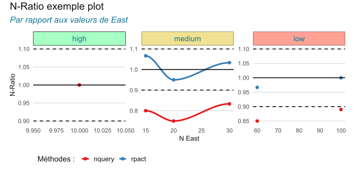
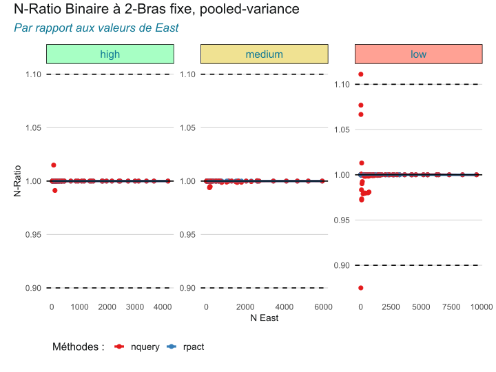
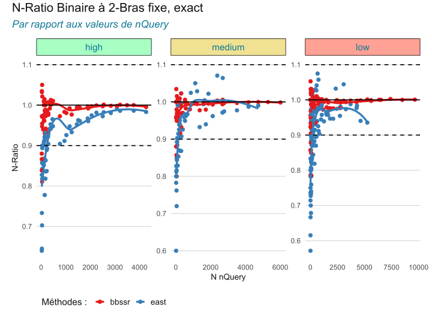
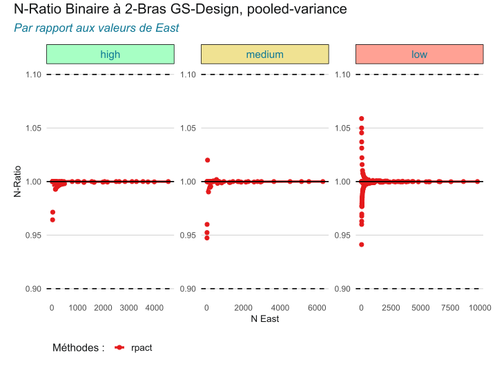
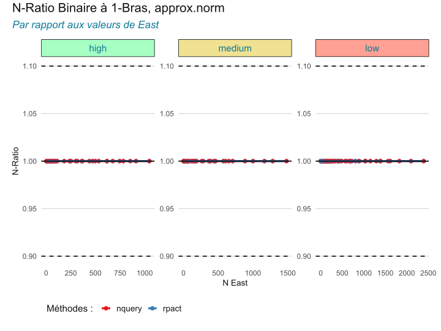
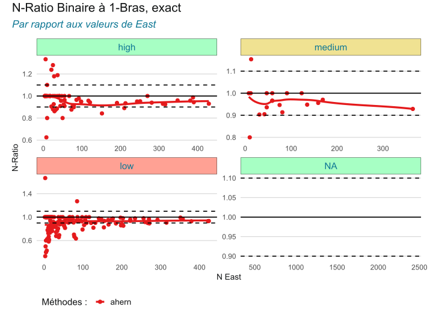
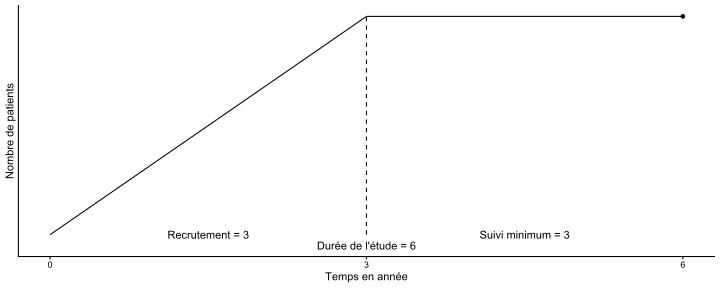
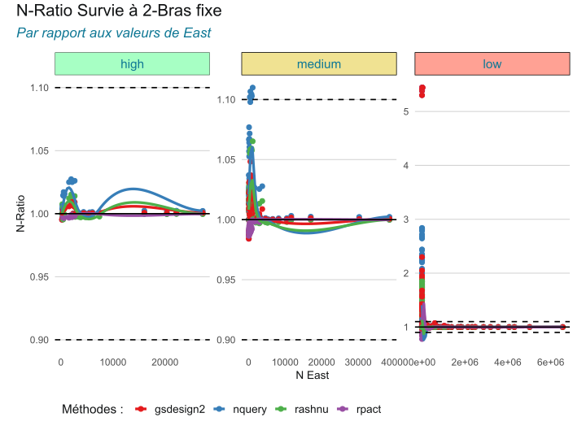
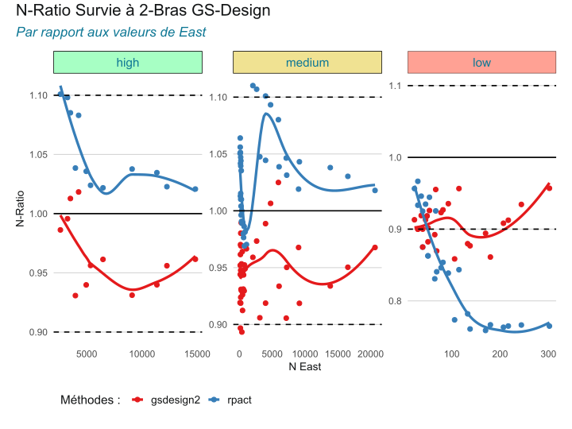
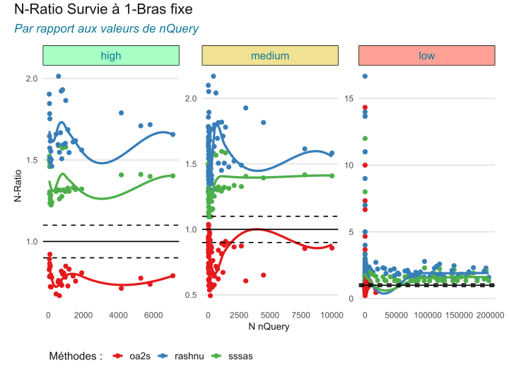

| Paramètre 1 | Paramètre 2 | Pertinence | N Réference | N Package 1 | N Package 2 |
|---|---|---|---|---|---|
| 0.5 | 4 | high | 10 | 12 | 8 |
| 0.5 | 12 | medium | 15 | 16 | 12 |
| 0.1 | 4 | low | 20 | 19 | 15 |
| 0.1 | 12 | low | 30 | 31 | 25 |
Comparaison des méthodes de calcul de la taille d’échantillon
comme alternative à East et nQuery
Dan Chaltiel ![]()
Anne Lourdessamy
23 février 2026
Introduction
Motivations
Pourquoi utiliser pour le calcul de la taille d’échantillon ?
- Calcul dans (pas d’outil externe)
- Partage et reproductibilité via le code
- Pas de problèmes d’export / interopérabilité
- Logiciel libre et open-source (audit, collaboration, )
→ Nécessité de valider les packages pour atteindre la crédibilité de logiciels comme East ou nQuery.
Présentation des Logiciels et package
- East 6
- Nquery 9.2
- Rpact
- gsDesign2
- Rashnu, bbssr, oa2s, sssas
Méthodologie
Grid Search
- Définir un design
- Fixer plusieurs valeurs par paramètres
- Générer toutes les combinaisons
- Calculer/Extraire la taille d’échantillon N finale
Présentation des résultats
N-Ratio = NMéthode / NRéférence
| N-Ratio exemple table | ||||||
| Par rapport aux valeurs de East | ||||||
| Pertinence | Min | Q1 | Moyenne | Médiane | Q3 | Max |
|---|---|---|---|---|---|---|
| high | ||||||
| nquery | 1.00 | 1.00 | 1.00 | 1.00 | 1.00 | 1.00 |
| rpact | 1.00 | 1.00 | 1.00 | 1.00 | 1.00 | 1.00 |
| medium | ||||||
| nquery | 0.75 | 0.78 | 0.79 | 0.80 | 0.82 | 0.83 |
| rpact | 0.95 | 0.99 | 1.00 | 1.00 | 1.00 | 1.10 |
| low | ||||||
| nquery | 0.85 | 0.86 | 0.87 | 0.87 | 0.88 | 0.89 |
| rpact | 0.97 | 0.98 | 0.98 | 0.98 | 0.99 | 1.00 |
| Rouge : < 50% des ratios dans ±10% | ||||||

Périmètre de la comparaison
Designs d’essai clinique parcourus
Périmètre de la comparaison
Méthodes évaluées selon le type d’essai
| Endpoint | Type d’essai | Évaluation | Logiciels | Package |
|---|---|---|---|---|
| Survie | 2 bras, fixe | — | East, nQuery | Rpact, Rashnu, gsDesign2 |
| Survie | 1 bras, fixe | — | nQuery | oa2s1, sssas2, Rashnu |
| Survie | 2 bras, group-sequential | — | East | Rpact, gsDesign2 |
| Binaire | 2 bras, fixe | Exacte | East, nQuery | bbssr |
| Binaire | 2 bras, fixe | Pooled | East, nQuery | Rpact |
| Binaire | 2 bras, fixe | Unpooled | East, nQuery | — |
| Binaire | 1 bras, fixe | Exacte | East | A’Hern (sans package) |
| Binaire | 1 bras, fixe | Approx.norm | East, nQuery | Rpact |
| Binaire | 2 bras, group-sequential | Pooled | East | Rpact |
Endpoint Binaire
Tests binaires
Pooled/Unpooled, Fisher exacte
- Z-test
- Pooled variance : \[ Z = \frac{\hat{p}_1 - \hat{p}_2}{\sqrt{\hat{p}(1-\hat{p}) \left(\frac{1}{n_1} + \frac{1}{n_2}\right)}}, \quad \hat{p} = \frac{x_1 + x_2}{n_1 + n_2} \]
- Unpooled variance : \[ Z = \frac{\hat{p}_1 - \hat{p}_2}{\sqrt{\frac{\hat{p}_1(1-\hat{p}_1)}{n_1} + \frac{\hat{p}_2(1-\hat{p}_2)}{n_2}}} \]
Fisher exact test
- Probabilité exacte des tables 2×2 : \[ P = \frac{\binom{n_1}{x_1}\binom{n_2}{x_2}}{\binom{n_1+n_2}{x_1+x_2}} \]
- Utile pour petits effectifs (pas d’approximation normale)
- Pas de formule analytique
Paramètres
| Paramètre | Valeurs testées |
|---|---|
| Proportion contrôle \(\pi_c\) | 0.1, 0.3, 0.5, 0.8, 0.9 |
| Delta de proportion \(\pi_e - \pi_c\) | 0.05, 0.15, 0.25, 0.49 |
| \(\alpha\) (2-sided) | 0.01, 0.05, 0.1, 0.20, 0.49 |
| Puissance (1-\(\beta\)) | 0.51, 0.8, 0.9, 0.99 |
pertinent, peu pertinant, cas limite
Essai à 2 bras fixe
Méthodes comparées
| Endpoint | Type d’essai | Évaluation | Logiciels | Package |
|---|---|---|---|---|
| Binaire | 2 bras, fixe | Exacte | East, nQuery | bbssr |
| Binaire | 2 bras, fixe | Pooled | East, nQuery | Rpact, bbssr |
| Binaire | 2 bras, fixe | Unpooled | East, nQuery | — |
- East: Difference of Proportions test [PN-2S-DI]
- nQuery : PTT36 / Inequality Tests for Difference of Two Proportions
Essai à 2 bras fixe
Résultats en pooled-variance
| N-Ratio Binaire à 2-Bras fixe, pooled-variance | ||||||
| Par rapport aux valeurs de East | ||||||
| Pertinence | Min | Q1 | Moyenne | Médiane | Q3 | Max |
|---|---|---|---|---|---|---|
| high | ||||||
| nquery | 0.99 | 1 | 1 | 1 | 1 | 1.0 |
| rpact | 1.00 | 1 | 1 | 1 | 1 | 1.0 |
| medium | ||||||
| nquery | 0.99 | 1 | 1 | 1 | 1 | 1.0 |
| rpact | 1.00 | 1 | 1 | 1 | 1 | 1.0 |
| low | ||||||
| nquery | 0.88 | 1 | 1 | 1 | 1 | 1.1 |
| rpact | 1.00 | 1 | 1 | 1 | 1 | 1.0 |

Essai à 2 bras fixe
Résultats en exact
| N-Ratio Binaire à 2-Bras fixe, exact | ||||||
| Par rapport aux valeurs de nQuery | ||||||
| Pertinence | Min | Q1 | Moyenne | Médiane | Q3 | Max |
|---|---|---|---|---|---|---|
| high | ||||||
| bbssr | 0.81 | 0.97 | 0.98 | 0.99 | 1.00 | 1.0 |
| east | 0.64 | 0.86 | 0.90 | 0.91 | 0.95 | 1.0 |
| medium | ||||||
| bbssr | 0.80 | 0.97 | 0.98 | 0.99 | 1.00 | 1.0 |
| east | 0.60 | 0.87 | 0.92 | 0.94 | 0.99 | 1.1 |
| low | ||||||
| bbssr | 0.79 | 0.97 | 0.98 | 0.99 | 1.00 | 1.1 |
| east | 0.57 | 0.83 | 0.89 | 0.92 | 0.97 | 1.1 |
| Rouge : < 50% des ratios dans ±10% | ||||||

Essai à 2 bras fixe
Résultats en exact II
| Proportions des sample sizes | ||||||
| En fonction des méthodes par rapport aux valeurs de East | ||||||
| Min | Q1 | Moyenne | Médiane | Q3 | Max | |
|---|---|---|---|---|---|---|
| bbssr | 0.931 | 0.956 | 0.975 | 0.975 | 1.000 | 1.010 |
| east | 0.778 | 0.848 | 0.872 | 0.866 | 0.913 | 0.932 |
Essai à 2 bras GS-Design
Méthodes comparées
| Endpoint | Type d’essai | Évaluation | Logiciels | Package |
|---|---|---|---|---|
| Binaire | 2 bras, séquentiel en groupes | Pooled | East | Rpact |
- East: Difference of Proportions test [PN-2S-DI]
Essai à 2 bras GS-Design
Résultats
| N-Ratio Binaire à 2-Bras GS-Design, pooled-variance | ||||||
| Par rapport aux valeurs de East | ||||||
| Pertinence | Min | Q1 | Moyenne | Médiane | Q3 | Max |
|---|---|---|---|---|---|---|
| high | ||||||
| rpact | 0.95 | 1 | 1 | 1 | 1 | 1.0 |
| medium | ||||||
| rpact | 1.00 | 1 | 1 | 1 | 1 | 1.0 |
| low | ||||||
| rpact | 0.94 | 1 | 1 | 1 | 1 | 1.1 |

Essai à 1 bras
Méthodes comparées
| Endpoint | Type d’essai | Évaluation | Logiciels | Package |
|---|---|---|---|---|
| Binaire | 1 bras, fixe | Exacte | East | A’Hern (sans package) |
| Binaire | 1 bras, fixe | Approchée | East, nQuery | Rpact |
- East : Single Proportion test [PN-1S-SP]
- nQuery : POT0 / Chi Square Test for One Proportion
Essai à 1 bras
Résultats sous approximation normale
| N-Ratio Binaire à 1-Bras, approx.norm | ||||||
| Par rapport aux valeurs de East | ||||||
| Pertinence | Min | Q1 | Moyenne | Médiane | Q3 | Max |
|---|---|---|---|---|---|---|
| high | ||||||
| nquery | 1 | 1 | 1 | 1 | 1 | 1 |
| rpact | 1 | 1 | 1 | 1 | 1 | 1 |
| medium | ||||||
| nquery | 1 | 1 | 1 | 1 | 1 | 1 |
| rpact | 1 | 1 | 1 | 1 | 1 | 1 |
| low | ||||||
| nquery | 1 | 1 | 1 | 1 | 1 | 1 |
| rpact | 1 | 1 | 1 | 1 | 1 | 1 |

Essai à 1 bras
Résultats en exacte
| N-Ratio Binaire à 1-Bras, exact | ||||||
| Par rapport aux valeurs de East | ||||||
| Pertinence | Min | Q1 | Moyenne | Médiane | Q3 | Max |
|---|---|---|---|---|---|---|
| high | ||||||
| ahern | 0.62 | 0.91 | 0.97 | 0.96 | 1 | 1.3 |
| medium | ||||||
| ahern | 0.80 | 0.93 | 0.96 | 0.97 | 1 | 1.2 |
| low | ||||||
| ahern | 0.33 | 0.83 | 0.89 | 0.92 | 1 | 1.7 |
| NA | ||||||
| ahern | Inf | NA | NaN | NA | NA | -Inf |
| Rouge : < 50% des ratios dans ±10% | ||||||

Endpoint Survie
Formule rapide (Schoenfeld)
\[ e = \frac{4 (z_{1-\alpha/2} + z_{1-\beta})^2}{(\log(HR))^2} \]
- Autres formules : Freedman, Hsieh-Freedman
De (e) à (n) : calcul de la taille d’échantillon
Passage du nombre d’événements au nombre de patients
- Nombre d’événements requis : (e) (Schoenfeld ou autres formules)
- Pour obtenir la taille d’échantillon (n) :
\[ n = \frac{e}{\text{probabilité d’événement dans l’étude}} \]
La probabilité d’événement dépend de :
- Durée de suivi
- Durée d’inclusion (accrual)
- Taux de pertes (dropout)
Paramètres
| Paramètre | Valeurs testées |
|---|---|
| Survie contrôle à 3 ans \(S_c(3)\) | 0.1, 0.3, 0.6, 0.9 |
| Hazard ratio \(HR\) | 0.1, 0.5, 0.7, 0.9, 0.99 |
| \(\alpha\) (2-sided) | 0.01, 0.05, 0.1, 0.20, 0.49 |
| Puissance (1-\(\beta\)) | 0.51, 0.8, 0.9, 0.99 |
pertinent, peu pertinant, cas limite
- Période de recrutement de 3 ans
- Suivi de 3 ans après le dernier admis
- Proportion égale entre bras contrôle/expérimental

Essai à 2-Bras fixe
Methods compared
| Endpoint | Type d’essai | Évaluation | Logiciels | Package |
|---|---|---|---|---|
| Survie | 2 bras, fixe | — | East, nQuery | Rpact, Rashnu, gsDesign2 |
- East: Log Rank Test Given Accrual Duration and Study Duration [SU-2S-LRSD]
- nQuery : STT1 / Two Sample Log-Rank Test of Exponential Survival
Essai à 2-Bras fixe
Résultats
| N-Ratio Survie à 2-Bras fixe | ||||||
| Par rapport aux valeurs de East | ||||||
| Pertinence | Min | Q1 | Moyenne | Médiane | Q3 | Max |
|---|---|---|---|---|---|---|
| high | ||||||
| gsdesign2 | 1.00 | 1.00 | 1.0 | 1 | 1.0 | 1.0 |
| nquery | 1.00 | 1.00 | 1.0 | 1 | 1.0 | 1.0 |
| rashnu | 1.00 | 1.00 | 1.0 | 1 | 1.0 | 1.0 |
| rpact | 1.00 | 1.00 | 1.0 | 1 | 1.0 | 1.0 |
| medium | ||||||
| gsdesign2 | 0.98 | 1.00 | 1.0 | 1 | 1.0 | 1.0 |
| nquery | 1.00 | 1.00 | 1.0 | 1 | 1.0 | 1.1 |
| rashnu | 1.00 | 1.00 | 1.0 | 1 | 1.0 | 1.1 |
| rpact | 0.98 | 0.99 | 1.0 | 1 | 1.0 | 1.0 |
| low | ||||||
| gsdesign2 | 0.85 | 1.00 | 1.2 | 1 | 1.1 | 5.4 |
| nquery | 0.98 | 1.00 | 1.3 | 1 | 1.1 | 2.8 |
| rashnu | 0.96 | 1.00 | 1.1 | 1 | 1.0 | 1.9 |
| rpact | 0.78 | 1.00 | 1.1 | 1 | 1.0 | 5.4 |

Essai à 2-Bras GS-Design
Méthodes comparées
| Endpoint | Type d’essai | Évaluation | Logiciels | Package |
|---|---|---|---|---|
| Survie | 2 bras, séquentiel en groupes | — | East | Rpact, gsDesign2 |
- East: Log Rank Test Given Accrual Duration and Study Duration [SU-2S-LRSD]
Essai à 2-Bras GS-Design
Résultats I
| N-Ratio Survie à 2-Bras GS-Design | ||||||
| Par rapport aux valeurs de East | ||||||
| Pertinence | Min | Q1 | Moyenne | Médiane | Q3 | Max |
|---|---|---|---|---|---|---|
| high | ||||||
| gsdesign2 | 0.93 | 0.94 | 0.97 | 0.96 | 0.99 | 1.00 |
| rpact | 1.00 | 1.00 | 1.10 | 1.00 | 1.10 | 1.10 |
| medium | ||||||
| gsdesign2 | 0.89 | 0.93 | 0.95 | 0.95 | 0.97 | 1.00 |
| rpact | 0.97 | 0.99 | 1.00 | 1.00 | 1.00 | 1.10 |
| low | ||||||
| gsdesign2 | 0.86 | 0.89 | 0.91 | 0.91 | 0.92 | 0.96 |
| rpact | 0.76 | 0.77 | 0.85 | 0.85 | 0.93 | 0.97 |
| Rouge : < 50% des ratios dans ±10% | ||||||

Essai à 2-Bras GS-Design
Résultats II
| Sample Size dans des cas pertinents | |||||
| α = 0.05, β = 0.1 et HR = 0.6 | |||||
| Survie à 3 ans |
Sample Size
|
Ratio
|
|||
|---|---|---|---|---|---|
| Rpact | East | gsDesign2 | Rpact/East | gsDesign2/East | |
| 0.2 | 211 | 203 | 199 | 1.040 | 0.980 |
| 0.5 | 318 | 321 | 306 | 0.991 | 0.953 |
| 0.8 | 752 | 776 | 739 | 0.969 | 0.952 |
Essai à 1-Bras
Méthodes comparées
| Endpoint | Type d’essai | Évaluation | Logiciels | Package |
|---|---|---|---|---|
| Survie | 1 bras, fixe | — | nQuery | oa2s1, sssas2, Rashnu |
- nQuery : SOT1 / One Sample Log-Rank Test with Accrual
Essai à 1-Bras
Résultats
| N-Ratio Survie à 1-Bras fixe | ||||||
| Par rapport aux valeurs de nQuery | ||||||
| Pertinence | Min | Q1 | Moyenne | Médiane | Q3 | Max |
|---|---|---|---|---|---|---|
| high | ||||||
| oa2s | 0.67 | 0.74 | 0.78 | 0.79 | 0.82 | 0.92 |
| rashnu | 1.50 | 1.60 | 1.70 | 1.60 | 1.80 | 2.00 |
| sssas | 1.20 | 1.30 | 1.40 | 1.30 | 1.40 | 1.60 |
| medium | ||||||
| oa2s | 0.49 | 0.67 | 0.78 | 0.81 | 0.88 | 1.00 |
| rashnu | 1.30 | 1.40 | 1.60 | 1.60 | 1.70 | 2.20 |
| sssas | 1.10 | 1.20 | 1.30 | 1.30 | 1.40 | 1.60 |
| low | ||||||
| oa2s | 0.22 | 0.65 | 1.10 | 0.86 | 1.10 | 14.00 |
| rashnu | 0.67 | 1.60 | 2.10 | 1.90 | 2.20 | 17.00 |
| sssas | 0.55 | 1.30 | 1.70 | 1.50 | 1.70 | 14.00 |
| Rouge : < 50% des ratios dans ±10% | ||||||

Conclusion
comme alternative à East et nQuery
est une alternative vérifiée dans la majorité des cas
Essai exact : A’Hern en 1 Bras, bbssr/east à 2 BRas
1-Bras survie : plusieurs méthodes/ plusieurs résultats
Limitations
- Les packages font parfois ds choses que East et nQuery ne propose pas (certain piecewise, strata etc) qui ne peuvent donc pas être vérifié par comparaison donc
- Choix arbitaires de design : “Supériorité”, certains paramètres, pertinence
- Tous ce qui n’a pas été comparé n’est pas vérifié, vérification partielle
- Necessiterait de comparée à chaque MAJ/version
Questions futures
Sur les designs eux même - GS-Design LanDeMets : O’Brien Flemming, Pocock, autre ? Alpha 1-sided
Sur les méthodes : - Méthode de Lakatos pour la survie ? - Méthode pour l’analyse Endpoints survie à 1-Bras